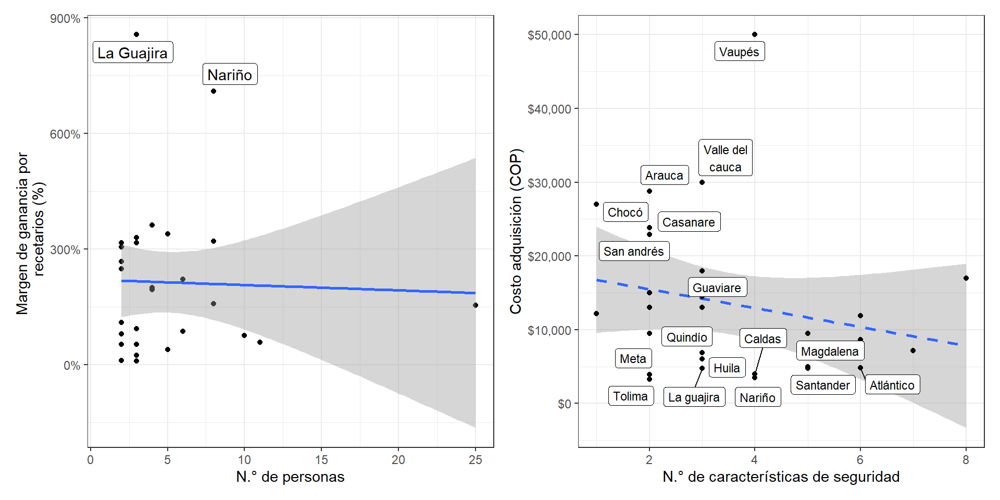

5.4 Características de los recetarios
Uno de los puntos de acompañamiento del proyecto Misión PRI era conocer tanto en las visitas presenciales como virtuales, los tipos de medidas de seguridad que se implementan en los ROs de los diferentes departamentos, lo anterior se consolidó en la Figura 5.13, en la cual en primera medida se pudo observar que existe una gran variedad de medidas consideradas de seguridad en los ROs, y que existen y existirán tantas como nuevos proponentes se tengan, sin embargo, se reconoce que todos los departamentos implementaron la codificación en los recetarios oficiales tal y como se menciona en la Resolución 1478 de 20084, Artículo 89, como se mencionó previamente, dicha codificación serial, en la mayoría de casos alfanumérica, desarrollada para cada talonario está pensada para ser una identificación única. En el siguiente porcentaje de mayor frecuencia se tienen las medidas de baja complejidad, con cierto riesgo de falsificación, 60% corresponden a marcas de agua, como por ejemplo figuras particulares o el mismo escudo de la gobernación, 55% sellos y/o escudos institucionales, normalmente correspondientes a las gobernaciones respectivas, y en todos los casos formatos institucionales membretados; microtexto o microletras, estas últimas con proporciones menores al 10%.
Figura 5.13: Medidas de seguridad en los recetarios

Considerando el riesgo de falsificación, otros Fondos Rotarios han optado por implementar niveles de seguridad mayores y elevar la confianza en el manejo de los ROs, entre estas medidas se tienen las tintas invisibles, tri-reactivas o fluorescentes que brillan al estar frente a la luz UV, las pruebas reactivo metal, que consisten en raspar un espacio determinado del RO con un metal o moneda desde la página original del talonario, y automáticamente los folios continuos se marcarán, los códigos QR que codifican información del año en el cual fue distribuido el talonario, filamentos o bandas de seguridad tecnología similar a los billetes, y demás que se pueden observar en la Figura 5.13. Menos del 40% de los Fondos Rotarios han implementado medidas de alta seguridad en sus recetarios oficiales debido a la capacidad de manufactura de los proveedores y/o considerando los requerimientos alcanzados según la modalidad de contratación de cada departamento. Dicha limitante se identificó en especial en las regiones alejadas del centro del país, donde, en términos de los FRE, los proveedores departamentales no tienen la capacidad o la tecnología suficiente para elaborar un talonario con características de alta seguridad. Y adquirir contratos con proveedores externos al departamento dificulta el seguimiento o alarga los procesos de compra, por lo que supone superar las barreras geográficas y/o sociales de algunos departamentos.
Figura 5.14: Comparativo de márgen de ganancia de recetarios
Complementando con la gráfica en la Figura 5.14, se confirma que existe un gran margen de variabilidad entre los costos de adquisición y venta de ROs (margen de ganancia) de los FRE. Dicha variabilidad dificulta el análisis del comportamiento de ganancias de los FRE. Por ejemplo antes de completar el proyecto de inversión, se estimaba observar un comportamiento en el cual los recetarios oficiales con más características de seguridad (independiente de su nivel de complejidad) aumentarían de forma proporcional su costo de adquisición y del mismo modo su precio de venta, sin embargo, el acompañamiento permitió evidenciar una tendencia diferente que se puede observar en la Figura 5.14, de forma no significativa, entre más características de seguridad implementadas (independiente de su nivel de complejidad) en un RO, más económico su costo de adquisición.
Las medidas de seguridad, entendidas como un tipo de requerimiento técnico alcanzados o pactado en el contrato, depende de la capacidad de manufactura de los proveedores, su experiencia en el mercado, y la modalidad de contratación establecida en cada departamento, y estos últimos determinan el costo de adquisición, y todo lo anterior determina el precio de venta, porque se hace acumulativo.
Figura 5.15: Porcentaje de entes territoriales que reciben recetarios oficiales recibidos prescritos/diligenciados

En relación a la Figura 5.15, se puede observar que 17 de los FRE entrevistados confirmaron que si reciben los recetarios diligenciados de las instituciones inscritas en su despacho dentro de los tiempos estimados, ver Figura 5.16, esto se realiza con el fin de corroborar los informes allegados correspondientes al anexo número 13 que se entregan mensualmente. El resto de los departamentos (57%) no reciben los ROs prescritos en físico, entre las razones, la más frecuente está relacionada con la capacidad de almacenamiento del FRE de este tipo de documentación, que suele ser muy limitado o no se cuenta con el mismo. En dichos casos, los fondos rotarios han optado por emitir circulares, solicitando a las entidades y médicos prescriptores inscritos que mantengan la custodia de los talonarios diligenciados, como parte de la historia clínica de los pacientes, hasta que el FRE realice la visita de inspección, vigilancia y control. Una vez allí, se realizará un muestreo para evidenciar que las fórmulas prescritas en un determinado tiempo concuerden con las cantidades de medicamentos reportados en los informes mensuales. Durante el acompañamiento se complementó como recomendación a los FRE, se considerará alinearse a lo expresado en la Circular 009 de 2015 del FNE5, donde se difunde la buena práctica de implementar bases de retención documental y gestión de archivo.
Figura 5.16: Tiempo de recepción de recetarios oficiales desde IPS

La frecuencia con la cual se reciben los recetarios oficiales a los FRE desde las entidades y médicos prescriptores inscritos se observa en la Figura 5.16, la cual guarda correlación con la información analizada en el punto anterior, donde 13 de los 17 Fondos Rotarios reciben los 10 primeros días del mes los recetarios oficiales prescritos conforme a lo solicitado a las instituciones de cada departamento, mientras que los otros 4 FRE no han estandarizado el tiempo de entrega y reciben los recetarios oficiales a lo largo del mes, asegurando su recepción mediante recordatorio por correo electrónico o comunicación telefónica, si llega a ser requerido.
Figura 5.17: Tiempo de archivo de los recetarios oficiales en los FRE

Complementando la información reportada en la Figura 5.15, y 5.17, se relacionó el tiempo de archivo que los FRE que si reciben los recetarios oficiales los almacenan, obteniendo que 10 FRE los almacenan por un periodo mayor a 5 años. Durante las jornadas de inmersión territorial se puedo observar que este tiempo de almacenamiento, en la mayoría de los casos, es por desinformación en los FRE, puesto que no se tiene presente el tiempo que se deben guardar estas copias, y al considerarlas parte de la historia clínica de un paciente estiman guardarlas por hasta 10 años, superando en muchos casos la capacidad de archivo de los FRE. En otros casos, la intención de archivo se acoge a las medidas establecidas por las gobernaciones, en las cuales se pide un archivo de 20 años para documentación critica, según las tablas de retención documental gubernamental. Otros FRE en cambio establecieron protocolo de archivo y una vez cumplido el periodo de almacenamiento, por supuesto, posterior revisión, los recetarios oficiales son destruidos.

Como se mencionó previamente durante el acompañamiento se compartió la Circular 009 de 2015, la cual en su Artículo Primero expresa lo siguiente:
“Que las autoridades administrativas, los fabricantes, los comerciantes, los hombres de ciencia, las Instituciones científicas y los hospitales lleven registros en que consten las cantidades de cada estupefaciente fabricado, y de cada adquisición y destino dado a los estupefacientes. Dichos registros serán conservados por un periodo de dos años por lo menos.”
Cuando se utilicen talonarios (artículo 30, inciso 2 b) de recetas oficiales, dichos talonarios se conservarán también durante un periodo de dos años por lo menos”. En este sentido, los FRE buscarán adoptar dicha medida para liberar espacio de almacenamiento, con el fin de que pueda ser aprovechado para otro tipo de insumos.
Debido a que los recetarios oficiales son el requisito obligatorio para la dispensación de medicamentos de control especial o monopolio del estado, se ha visto la necesidad de resguardar los talonarios en áreas seguras y de acceso limitado para evitar robos o desvíos. En la Figura ?? se observa que todos los departamentos han implementado algún tipo de medida de seguridad para el control de los ROs. La mayoría de los FRE, más del 70%, han optado por almacenar los recetarios oficiales en gabinetes u oficinas privadas con acceso limitado al personal del FRE, con el objetivo de garantizar la custodia de los mismos y evitar pérdidas, de preferencia en espacios que además aseguren su buen estado físico. Hasta el momento, estas medidas de seguridad han sido suficientes puesto que durante el acompañamiento no se encontraron casos en los cuales los FRE hayan mencionado históricos de situaciones de robo o pérdida de ROs.
Sin embargo, durante el proyecto de inversión, especialmente durante las visitas a las que se tuvo acceso presencial o imágenes de las oficinas de almacenamiento, se pudo evidenciar que, si bien los recetarios están almacenados en oficinas privadas o gabinetes con llave, las condiciones para tal fin no son las adecuadas, se tienen situaciones donde se comparten espacios con los medicamentos, y dichos espacios no son suficientes, por lo que se deben disponer en lugares estrechos de las oficinas del FRE. Adicionalmente, los FRE suelen solicitar mejoras en la infraestructura o seguridad de las oficinas, pero la inversión se ve limitada por autorización y/o estudio de recursos económicos para estos proyectos financiada en la mayoría de los casos por las gobernaciones. Debido a lo anterior, se hace necesario una mejoría en la infraestructura para la mayoría de los Fondos Rotatorios y mejorar las prácticas de almacenamiento.
Además de lo anterior, existen 3 departamentos que realizan un inventario físico diario aumentado la seguridad y trazabilidad de la rotación de los recetarios. Este inventario físico está relacionado con… __